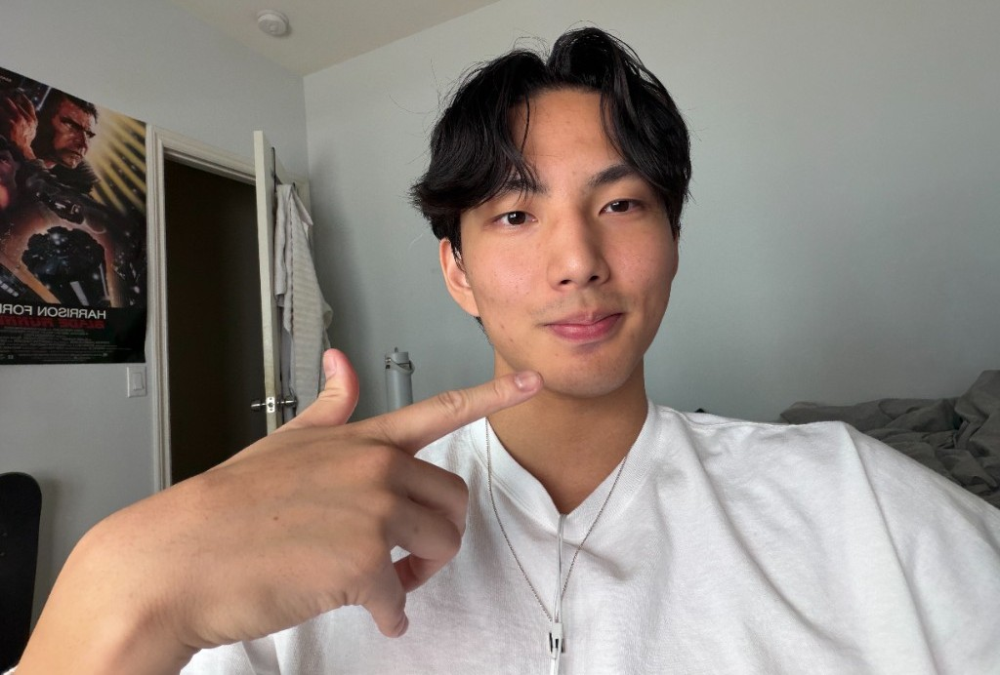

About

I’m Joshua Lu, a student / software engineer studying at UCLA. I care about the intersection between math and computer science.
I was born and raised in Taipei, Taiwan. I grew up caught between two cultures with a Taiwanese dad and a Chinese American mom. I often find myself navigating between differing perspectives and contradicting ideas. I think that experience has contributed to my curiosity about people and the ways we make sense of our surroundings.
Although I study math and computer science, my interests extend far beyond technology. I’ve always been drawn to the humanities, particularly philosophy, psychology, and poetry. I enjoy thinking about questions that don’t necessarily have clear answers. To me, these interests aren’t separate from my technical pursuits. They offer different ways of understanding the world, one through systems and logic, the other through human experience and emotion.